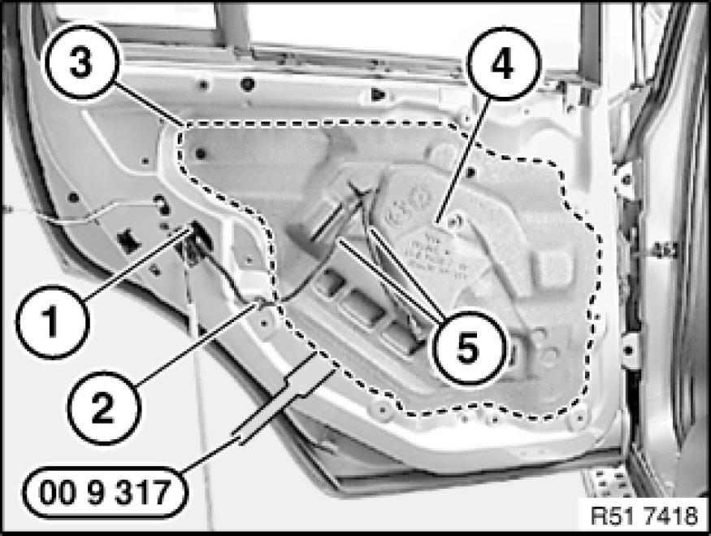
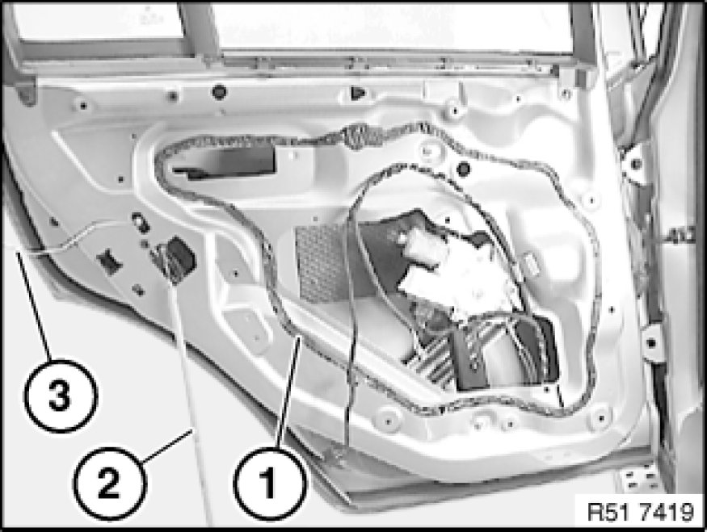
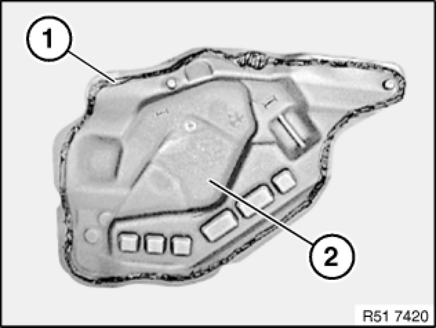
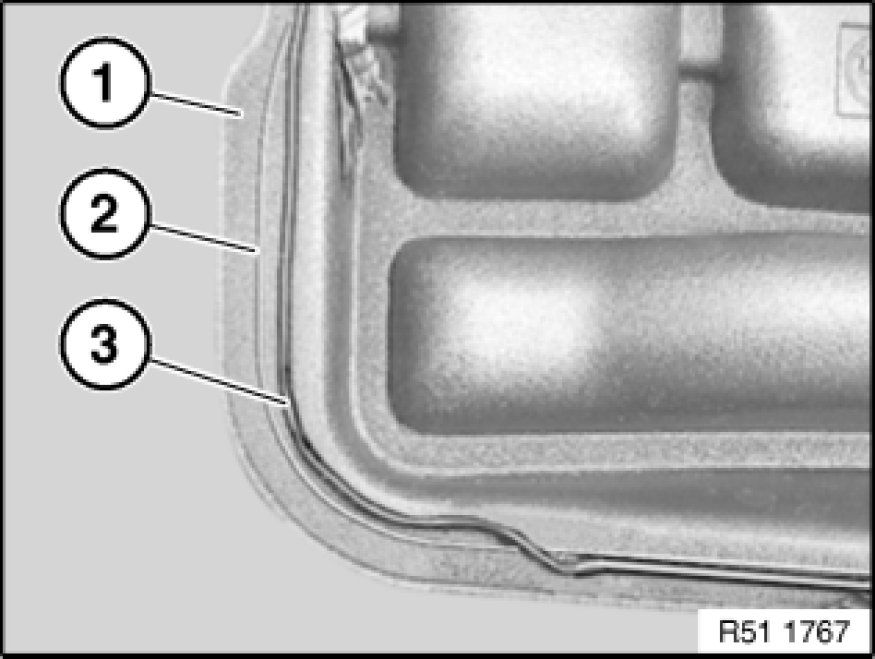

Removing and Installing/Replacing Sound Insulation on Left or Right Rear Door
51 48 070 - Removing and installing/replacing sound insulation on left or right rear door

Special tools required:
- 00 9 317 00 9 317 Trim Panel Wedge

Necessary preliminary tasks:
- Remove rear door trim panel Removing and Installing Left or Right Rear Door Trim Panel

Disconnect plug connection (1).
Unclip clip (2).
Using special tool 00 9 317 00 9 317 Trim Panel Wedge (trim panel wedge), lever out sealing bead (3) of sound insulation (4) completely or if necessary partially.
Feed wires (5) out of sound insulation (4).

Installation:
In case of replacement or partial detachments, lay butylene tape (sourcing reference: BMW Parts Service) depending on the conditions on inner door panel or sound insulation.
Seal cable penetrations with butylene tape.

Note:
Position of butylene tape (1) on inner door plate.
Important!
Do not damage Bowden cable (2) and lock knob control rod (3).

Note:
Position of butylene tape (1) on sound insulation (2).

Note:
A marking (2) is provided all round on the sound insulation (1).
Butylene tape (3) rests on or inside the marking (2).

Clean bonding area with adhesive remover (sourcing reference: BMW Parts Service).
Air drying time: 1 minute
Important!
Adhesive areas must be dry and free of dust and grease.
Once it has been cleaned, do not touch the adhesive area with bare hands.
Lay single row of 6 mm dia. butylene tape or double row of 3 mm dia. tape (sourcing reference: BMW Parts Service) in specified adhesive area.
Heat butylene tape (hot air blower) and press down firmly on sound insulation all round.
Contact pressure with hand roller: approx. 30 N/cm2
Manual contact pressure: approx. 10 N/cm2
Note:
Firm thumb pressure has approx. 50 N/cm2